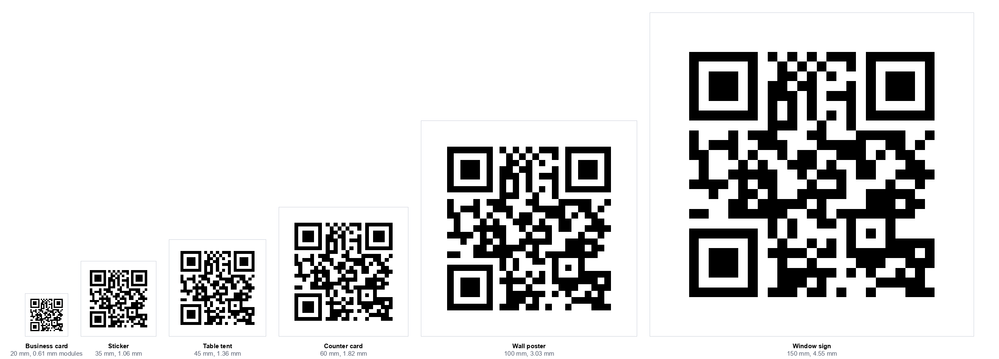

Advice about QR code size stops at the sign. Print it this big for that distance, and there the guide ends. It leaves out the thing that decides whether the sign works: what the printed size does to each individual black square, and how much of that you spend on the length of your link.
So we worked it out for the six printed objects people actually make.
The short version: a 20 mm code on a business card gives you 0.61 mm modules and tolerates about 0.24 mm of blur. A 150 mm window sign gives 4.55 mm modules and tolerates 1.82 mm. That is seven times the forgiveness for the same code.
The number that actually matters
A QR code is a grid of squares called modules. Printed size divided by module count gives you the width of one square, and that single number governs everything else.
It governs blur most of all. Our scan limits test found that a code stopped decoding once the image was blurred by roughly four tenths of one module. That is a proportion, so it converts straight into millimetres once you know the module width. It is the closest thing we have to a physical tolerance for a printed code.

What each sign size gives you
With a short link, 19 characters, every one of these is a 25 by 25 grid. Add the four module quiet zone on each side and you are dividing the printed width by 33:
| Sign | Code size | One module | Blur it tolerates |
|---|---|---|---|
| Business card back | 20 mm | 0.61 mm | 0.24 mm |
| Sticker | 35 mm | 1.06 mm | 0.42 mm |
| Table tent | 45 mm | 1.36 mm | 0.55 mm |
| Counter card | 60 mm | 1.82 mm | 0.73 mm |
| Wall poster | 100 mm | 3.03 mm | 1.21 mm |
| Window sign | 150 mm | 4.55 mm | 1.82 mm |
Put the first row next to something real. A quarter of a millimetre is roughly the thickness of three sheets of paper. That is the entire blur budget of a business card code, and it has to cover the printer's ink spread, the paper's absorbency and whatever focus error the phone contributes. It is no mystery why small printed codes are the ones that fail.
This is why moving the sign up one size helps so much. Going from a 35 mm sticker to a 45 mm table tent is not a 29% improvement in a vague sense. It is 0.42 mm of blur tolerance becoming 0.55 mm, in a range where a tenth of a millimetre is the difference between working and not.
How long can the link be?
Everything above assumed a short link. A longer one raises the module count, and since the printed size is fixed, every module gets smaller. Eventually they drop below the practical print floor of about 0.4 mm.
Working backwards from that floor gives a character budget for each sign:
| Sign | Code size | Link budget | Grid at the limit |
|---|---|---|---|
| Business card back | 20 mm | about 85 characters | 41 x 41 |
| Sticker | 35 mm | about 365 characters | 77 x 77 |
| Table tent | 45 mm | about 670 characters | 101 x 101 |
| Counter card | 60 mm | over 1,300 characters | 141 x 141 |
| Wall poster | 100 mm | The format runs out before the print size does | |
| Window sign | 150 mm | The format runs out before the print size does | |
The business card row is the one worth remembering. 85 characters is not much. It is a domain and a short path. Add tracking parameters, which routinely run to 60 or 80 characters on their own, and you are past it without noticing.
From the counter card upwards the printed size stops being the constraint. A QR code tops out at version 40, a 177 by 177 grid holding 2,331 bytes at error correction level M, and on a poster you hit that ceiling long before the modules get too small to print. We measured that ceiling separately when testing whether a photo fits in a vCard code.
The floor is not a cliff
We then rendered these codes and decoded them, which is where the honest caveat comes in.
Codes at exactly the limit decoded, as expected. But so did several past it. A 120 character link on a 20 mm business card, giving 0.38 mm modules, decoded fine. So did a 900 character link on a table tent at 0.37 mm. Only one case past the floor actually failed.
So what is the 0.4 mm floor for? Not the decoder. On a clean digital image the decoder copes well below it. It is a margin for the physical world: ink spreading into the paper, a camera that has not quite focused, a laminate catching the light, a phone held by someone walking past. The budgets above are where you still have room for those. Below them you are betting that nothing goes wrong.
This matches what we found measuring damage tolerance and scan limits: a software decoder reading a clean file is the best case, every time. Design for the worst one.
What to do with this
- Shorten the link before you shrink the code. It is the only move that helps both numbers at once. A short path on a domain you control also lets you change the destination later without reprinting.
- Strip tracking parameters from printed codes. They are the commonest way an 85 character budget gets blown, and a printed code cannot be attributed the way a clicked link can anyway.
- If the link has to be long, go up a size. A table tent instead of a sticker buys you roughly twice the characters and a third more blur tolerance.
- Measure the printed code with a ruler once. If it is smaller than intended, your printer is scaling to fit, and every number here moves with it.
Our sign maker applies these sizes automatically and decodes the finished sign before you download it, so a link that is too long for the size you picked is caught rather than printed. Our print sizing guide covers choosing the size from scanning distance in the first place.
How we worked it out
- Module width is printed size divided by the module count plus the eight modules of quiet zone. Read from the encoder, so it is exact.
- Blur tolerance is 0.4 of a module, the failure point from our own scan limits test, converted to millimetres.
- Link budgets were found by growing a realistic URL until the module width dropped below 0.4 mm, at error correction level M throughout.
- The decode check rendered each case at 600 dpi, then resampled to a phone like capture resolution before reading it back and comparing character by character.
Two limits worth stating. The 0.4 mm floor is a widely used working figure for laser printing rather than something we measured on a press, and your stock will move it. And the decode test is software on a clean render, which is exactly why the section above says the floor is a margin rather than a threshold.
The summary
Choosing a sign size is really choosing how much physical error you can absorb. The printed millimetres per module is the number, and your link length spends it.
On a business card you have 0.24 mm of blur and about 85 characters. On a window sign you have 1.82 mm and more than the format can hold. If your link is long, the answer is a shorter link or a bigger sign, not a smaller code.
Our QR code sign maker builds table tents, posters, stickers and window signs at these sizes and checks the result decodes first. If you already have artwork, the stress test will tell you how much blur it survives.